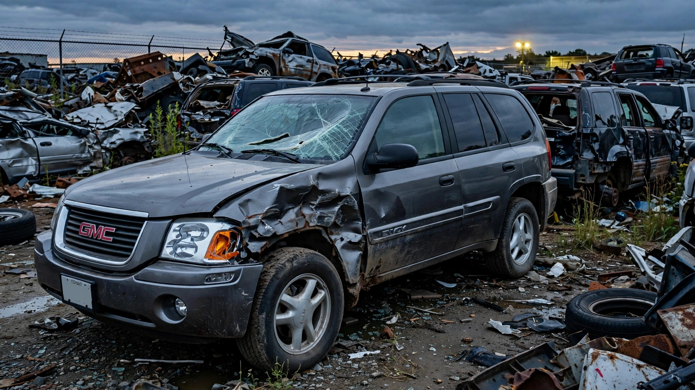

The GMC Envoy Won SUV of the Year. Then It Killed 988 People.

Motor Trend named the 2002 GMC Envoy its SUV of the Year, and that same model year 159 people died in Envoys, a number that climbed to 209 by 2004, which was the deadliest year in the nameplate's run and a year GM's marketing department apparently did not find concerning enough to mention in the brochures. By the time GM pulled the plug on the GMT360 platform, the Envoy had accumulated 988 fatalities in the FARS database at a rate of 2.26 deaths per 100 million vehicle miles traveled.[1]
That rate is 3.6 times the SUV class average of 0.63, worse than both the Ford Explorer and the Jeep Grand Cherokee, two vehicles that practically invented the concept of the rollover-prone truck-based family hauler, and yet GM never sold the Envoy as a risk because GM was too busy selling it as a step up from the Chevy Trailblazer, which shared every single structural component, crash rating, and engineering deficiency that made the Envoy lethal in the first place.
Same GMT360 body-on-frame platform, same crash structure, same 33 centimeters of footwell intrusion that IIHS documented when they slammed the first generation into an offset barrier, same POOR structural rating, and same test-dummy head bouncing off the B-pillar during rebound because the restraint system couldn't keep the occupant inside the vehicle's survival space.[2] GM charged $2,000 to $4,000 more for leather seats, chrome trim, and a GMC badge rather than reinforced pillars or standard side curtain airbags. Leather.
And the airbag situation is where the cynicism becomes measurable. Head curtain airbags on the Envoy were optional on a vehicle with a 20-to-30 percent rollover probability, a vehicle that NHTSA gave three out of five stars for rollover resistance, and a vehicle whose body-on-frame design made rollovers the single most likely fatal crash mode.[3] GM put the most effective rollover-survival technology behind a checkbox on the order sheet, priced it as an extra-cost option, and then watched as 988 occupants died in crashes where that equipment might have changed the outcome.
Add the Trailblazer's 2,473 deaths to the Envoy's 988 and a single platform killed 3,461 people across FARS's decade-long window, because six badges wore those same bones: Envoy, Trailblazer, Buick Rainier, Isuzu Ascender, Oldsmobile Bravada, Saab 9-7X, each one carrying a different grille and a different price tag into different showrooms but feeding a single, shared body count that GM never had to report as a consolidated number because federal crash data doesn't aggregate by platform.[1]
GM did fix the structure partway through, and the timeline is instructive. After the 2005 update with revised airbags and reinforced seatbelt geometry, IIHS bumped the rating from MARGINAL to ACCEPTABLE, and deaths dropped substantially, not because GM's engineers had a revelation about the value of human life but because IIHS published the test photos showing a crash-test dummy's skull hitting the window frame, and GM's PR department calculated what that image would cost them in fleet sales to rental agencies and municipal governments that actually read the ratings.[2]
Meanwhile the power window switches were catching fire. NHTSA Investigation EA12-004 documented 170 reports of smoke, melting, or flames at the Driver Door Module, fourteen of which involved actual fires with visible flames, and GM's initial response was to recall the vehicles in only 20 states plus D.C., limiting the action to salt-belt states where corrosion was the stated cause, until NHTSA forced a nationwide expansion because, apparently, electricity igniting plastic does not respect state borders.[4]
Impairment doesn't explain any of this away. At 21.2 percent, the Envoy's impairment rate sits right at the fleet median, which means these were not disproportionately drunk drivers wrapping themselves around trees at 2 a.m. but rather sober families driving a vehicle whose crash structure could not protect them when physics showed up at highway speed.[1]
What you should do
If you own a 2002-2009 Envoy or Trailblazer, check your VIN at nhtsa.gov/recalls immediately, because the DDM fire recall may still apply and if you're shopping used and someone tells you the Envoy was "the nicer Trailblazer," they're right, it was also identically dangerous, so treat the model year as a binary: a 2006 or later with the optional side curtain airbags and the structural revision is a fundamentally different vehicle than a 2002-2004. Pre-revision? Walk away.
Limitations
FARS captures only fatal crashes, so the Envoy's injury rate could tell a materially different story about its real-world performance, and the estimated VMT calculations introduce roughly ±15% uncertainty for vehicles no longer in active production. Fleet estimates for the Envoy's remaining approximately 350,000 units rely on registration-based projections rather than odometer data, and survivorship bias may inflate per-VMT rates for aging vehicles driven fewer miles by older owners.
Strongest counterargument
Body-on-frame SUVs of this era all performed poorly by modern crash-test standards, and singling out the Envoy ignores that the Ford Explorer, Dodge Durango, and Toyota 4Runner posted comparable or worse numbers in their respective generations. Fair point. But GM didn't price the Envoy as "comparable," they priced it as premium, and when you charge more, you owe more, and what GM actually delivered for that $2,000-to-$4,000 markup was cosmetic differentiation layered over identical engineering that killed people at exactly the same rate as its cheaper sibling.
Sources & References
- NHTSA, Fatality Analysis Reporting System (FARS), 2014–2023. nhtsa.gov
- IIHS, GMC Envoy crash test ratings, 2000, 2003, 2006. iihs.org
- NHTSA, New Car Assessment Program (NCAP) ratings: GMC Envoy. nhtsa.gov
- NHTSA, Investigation EA12-004: Driver Door Module thermal events. nhtsa.gov
- Motor Trend, 2002 SUV of the Year: GMC Envoy. motortrend.com
Source: NHTSA FARS 2014–2023. Fatality rates are estimated using registration-based fleet and VMT projections; actual per-mile exposure may differ. GMT360 combined total includes all badge variants sharing the platform. See methodology for caveats.